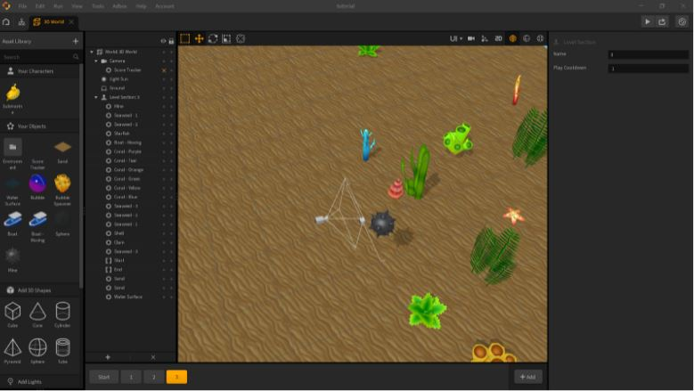
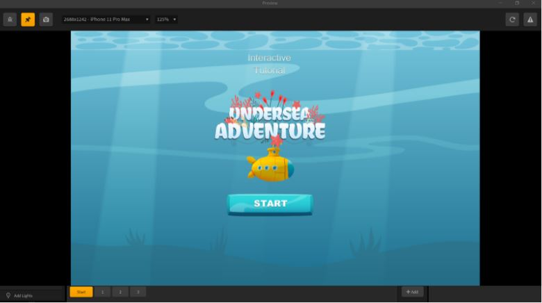
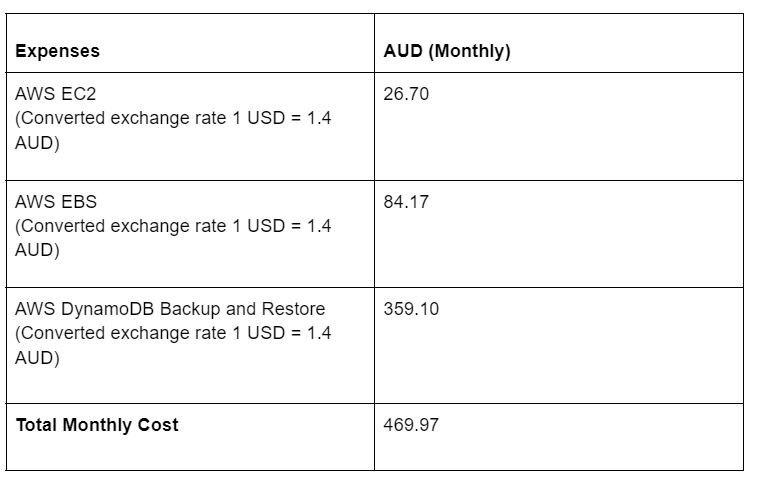
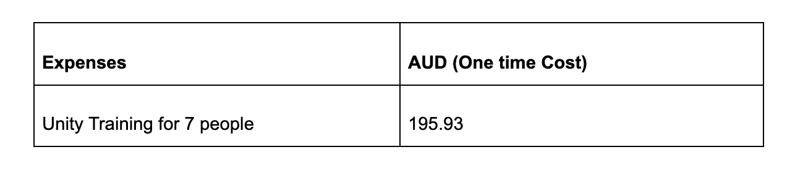
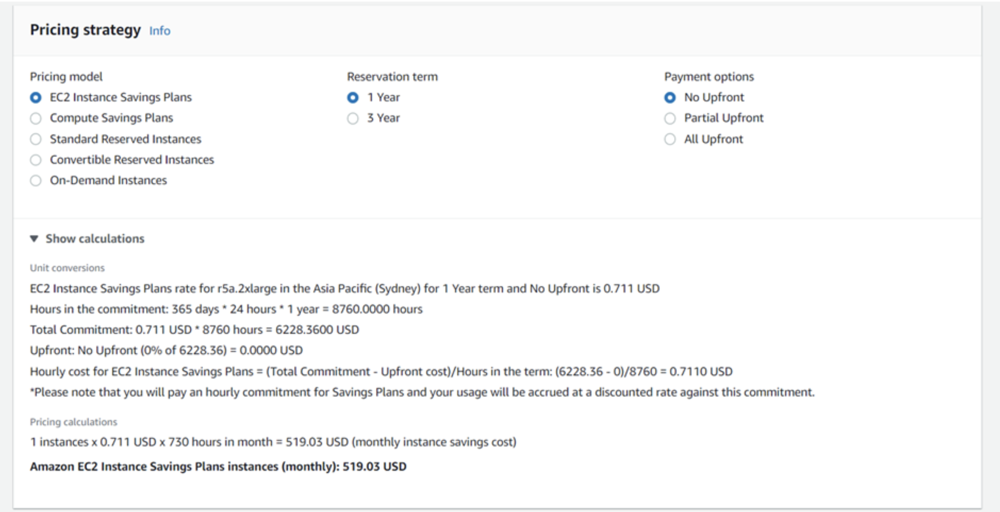
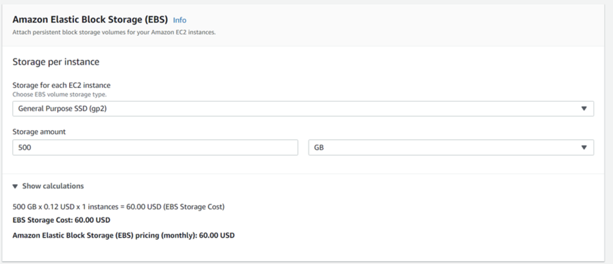
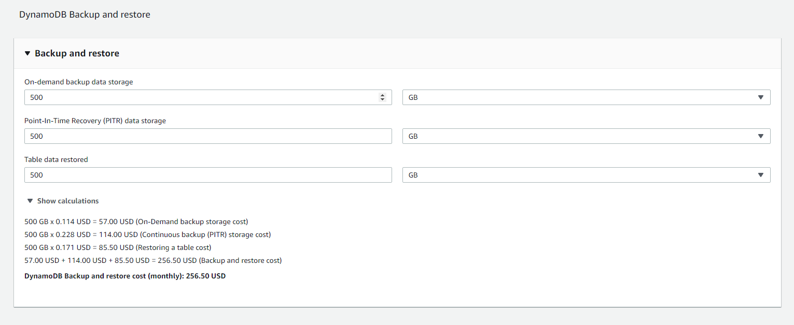
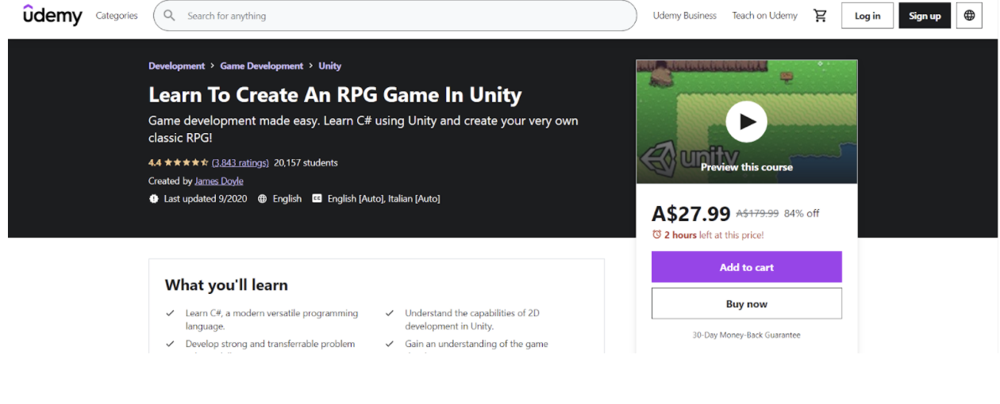

Overview
The RPG will have a focus on sentence mining, learning vocabulary and grammar in the context of full sentences rather than single word vocabulary.
Starting out, battles with enemy characters can be overcome with simple translation. The enemy will say something in either English or the target language, and it’ll be the player’s job to select the correct response via multiple choice answers. If correct, the user will receive a reward in the form of in game currency, an item, or even the enemy becoming playable. If the user selects the wrong answer, a battle will begin.
Eventually, it will switch from translation to selecting the matching sentence in the target language. For example, instead of translating the sentence ‘where is Tom?’ the correct response will be to select ‘Tom is at home’.
Tatoeba, a sentence and translation database under various Creative Commons licenses, will be used to build the base API.
Topic
This Role-playing game (RPG) is a game for learning languages and will focus on learning vocabulary, grammar and eventually constructing full sentences. The user will select native language and target language before the game starts. The story is based on battle fields with a hero character who eliminates enemies one after another in a road map. To complete each landmark in the road map, about 50 sub-levels need to be achieved successfully.
In the beginning of the battle, the game will be designed to use a translation method to overcome the enemies then it will include a response method. When the translation method is used, an enemy will start a conversation in native language, the user has to select the same meaning of target language among multiple-choice answers. This method will change into a response method eventually and instead of translating the sentence ‘Where is Tom?’, the correct response ‘Tom is at home’ has to be selected.
When the answer is correct, the enemy will be killed and the reward will be given as game currency or an item. If the wrong answer is selected, the player will be killed. 10 questions will be included in each sub-level and if you achieve less than 70% the questions have to be repeated in the same sub-level.
Motivation
There are various reasons that people are interested in learning new languages such as hobbies, job, travel and further study in different countries. Our RPG game will be used as both educational and entertainment tool for learners to be interested in their learning more and having fun at the same time.
The learners can play our game anywhere around the world as long as they have internet access. Unlike going to language classes, they can play on the bus, train or travel around the world without any trouble and stress. It would be more beneficial during this pandemic period when everybody is locked down and restricted to travel both local and international. They can relax and learn new languages by playing our game.
This project is focused on different skill levels of languages from beginner to advanced level of languages and the game can be played by any ages, however, our priority range of age is from 18 to 30. In addition, the wide range of customers in both gaming and education markets would be beneficial and bring remarkable profit for investors or shareholders.
Landscape
It is true that it is not an unusual game to be seen in gaming and education markets. There are a lot of online games related to learning languages. Some examples of learning games’ type are crossword, scrabble, vocabulary and grammar. The competitors in the gaming market which have very similar ideas with our RPG games are Influent, Earthlingo, Monster Phrases, Falling Clouds, Conditional Sentences and Slime Forest Adventure.
The features of most games in the market are very limited. For instance, some games are boring and they are not attracted visually by seeing square blocks all the time and filling in words, some can only practice grammar, and some can learn only vocabularies. Most language games are available only in English and people who would like to learn different languages other than English find it difficult to have even an educational tool. The difference of our game is that the player of our game can learn grammar, vocabulary and the players will be able even to make conversation and communicate fluently in their target language.
Detailed Description
Aims
Creating aims for a language learning application can be difficult, as many people will seek out our product for various reasons at various points in their language learning journey.
Broadly speaking, the end goal is to provide an introductory and supplementary experience to beginner to intermediate learners. While it will not take you from zero to fluent, a vague concept in of itself, it will hopefully bring our users somewhere between A2 and B1 as outlined by the Common European Framework of Reference for Languages (CEFR).
While we don't plan on making this solely a product for school age learners, both students and teachers will likely benefit the most from this product as the integration between teaching and technology becomes more common in the classroom (Navarre, 2018).
Teachers may also benefit from using it to better understand what vocabulary their students have gained, especially those who do not share the same native language as their students. Even those who aren’t educators in a language may benefit to learn basic vocabulary for the sake of ESL and equivalent students (Tichnor-Wagner, Parkhouse, Glazier and Cain, n.d.).
At its current state, Digital-Game Based Learning (DGBL) is not quite up to snuff to fully teach a language in of itself, but more research needs to be done in order to prove its level of effectiveness and it is commonly agreed that it, at the very least, help supplements the language learning process when it comes to classroom and solo study environments (Loewen et al., 2019).
Expanding on this, we will have a focus on catering to the market of Gen Z and Millennial language learners as they'll likely benefit from and connect best with the format of a language learning RPG.
Plans and Progress
NetIT Soulouts was to embark on the learning adventure of building a Role Play Game that was to enhance the players' learning of different languages. This was to be done by creating different enemies that when interacted with would produce a sentence or phrase that needed answering, if you answered correctly you would defeat said enemy and progress through the game. The first levels of the game would be gaining a basic understanding of the chosen language so that the player could move to harder phrases that need to be answered, for example the first ten levels or enemies would be learning colours like blue red or green then move to household items like television, telephone, fridge and computer. After learning the translations of beginner words, the enemies would then ask the player questions that use the beginner words for example “What is the colour of my shirt?” the response would be “blue” in the target language that has just been taught.
A lot of the past five weeks was spent researching how to best build the Role Play Game. We have looked at using different application building programs and software but none were suitable for use in what we were hoping to achieve for the task of getting at least one level completed. During the research of finding what platform was best, when we found one we would test what we could do with the app. We followed an interactive tutorial for Build Box to try and create a game, but this was not an effective way of trying to build a game to learn a language and more for games like Colour Switch. After learning how to use the program that took a week with watching videos and completing tutorials. This process was the longest part of trying to create the game we needed to submit to complete the assessment.


By the time we found a suitable application, Figma to build the game we had reached week 12 and were unable to complete any levels or codes. Building a role play game has proven to be very difficult to complete in 6 weeks, there were alot of time restrictions and uncertainties for what we needed to complete and times to complete them.
We decided that the engine used to develop our game will be Unity. Our decision came after comparing the cost and performance of both similar game engines and building our own. It's also cross-platform, allowing us to avoid the lengthy process of fully porting our game to multiple operating systems on both desktop and mobile. Optimising for lower-end hardware is also much easier because of this.
It also has a personal licence available for free, allowing us to work on the project at no fee until we receive 100K USD in either revenue or funding within 12 months.
There are a plethora of games already created with the engine, of various genres and mechanics. The flexibility to create the systems we need in game is one of the most important pros.
However, the software is not without its cons. Knowledge of C# is required along with time dedicated to learning Unity's UI. Due to the flexible nature of the engine, it will take time, along with trial and error, to discover the best way to implement our mechanics. Taking a course will mitigate this, and the pros vastly outweigh the cons.


Software and Tools
First, we are going to test on our own personal computers for a demo before launching an RPG game. Once it has completed and ready to deploy, we will use Amazon Web Service (AWS) Amazon Elastic Computing Cloud (Amazon EC2) which can provide the secure and resizable desired server we want. Amazon EC2 can provide:
- Virtual computing and network environment
- Preconfigured templates of Operating System (OS) with customised CPU, memory, storage and networking capacity
- Key pair for security login connection
- Compatible to use with Amazon Elastic Block Store (EBS)
- A customised firewall that allows protocols, ports and the range of IP addresses
We also planned to get Amazon Elastic Block Store (EBS) volumes as our cloud storage that can be mounted on Amazon EC2 and formatting and partitioning as we want. AWS DynamoDB service will be used to backup and restore our EBS storage service.
All of our team members are young students and the investment of infrastructure and Virtual Hardware machines are out of our budget range. Therefore, we have decided to use AWS so that we do not need to worry about utilities, installation, building rental fee and security.
Security & Client Privacy
It is important to be aware that we need to tighten our security as we are creating an educational RPG and we use Amazon Cloud Services. Amazon will provide us a key pair which is a set of security credentials that consist of a private key and public key to access our Amazon EC2 service. This set of key pairs is very hard to be cracked by hackers but we need to save our private key in a secure place since Amazon will allow anyone to connect who has the key. We are required to specify the key whenever we try to connect Remote Desktop Connection to our Window Server. Our Company Policy is to keep the key in an encrypted zip file and every member needs to delete the extracted key after they use it each time.
Unnecessary protocols, ports, and IP addresses will be disabled on the firewall device and all company data would be encrypted. Keeping operating system and anti-virus software on both server and each member’s laptop is one of our company policies to follow.
Internet Protocol Security (IPsec) framework will be set up to protect IP traffic on the network layer. IPsec performs initiation, (Internet Key Exchange) IKE phase 1, IKE phase 2, Data
transfer and termination to create the tunnel. IPsec can provide the following features:
- The data will be encrypted and only sender and receiver can be read.
- The sender and receiver can be able to check if someone makes the changes to the packet.
- Both the sender and receiver can check that the desired device is talked by authentication.
- IPsec prevents sending duplicate packets if a hacker captures the encrypted and authenticated packets and sends them again.
Hard Drive that stored our data could be damaged for several reasons such as temperature, corrupted file,virus, weather and so on. It is crucial to keep backup and disaster recovery
schemes from outage for several reasons, we are going to use Amazon DynamoDB
Backup and restore service. This service will offer On-demand backup data storage, Point-In-Time Recovery (PITR) data storage and Table data restored space.
Nowadays, data breach happens even in well-known companies and causes serious harm to both company reputation and consumers. Therefore, every member, especially, people who take responsibility for cyber security should read and understand Privacy Act 1988 on the Federal Register of Legislation website. Consumer data will be confidential and collecting data from consumers will be permitted only when it complies with Privacy Act 1988.
There are also a few factors that need to get attention by employees with regard to cyber security. Here are the causes of potential damage to our company security and employees should avoid.
- Installing third party software from external resources such as USB, external HDD, and websites
- Connecting to the company network from VPN via public wi-fi
- Downloading files, folders and images from first time or infrequent senders
- Leaving username and password as default or blank on laptop and network equipment devices
- Partial Drive Encryption
Funding
The expenses are divided into two parts, monthly expenses and one time expenses.


Please see below screenshots for detailed calculation.





Roles
As a group we have decided not to define roles as we are not actually developing anything, rather just working
together as a team to present the most detailed report we possibly can essentially at this point of the project
we are all researchers trying to gather together enough information to prove our project is a viable option in
the real world. Therefore defining a UI designer or Lead programmer is not a possibility as based on our current
level of experience in the IT field we simply do not have the experience / timeframe / budget to actually present
any results. Instead we are working as a team to systematically work through the Assignment 3 requirements by breaking
the assignment down into digestible size pieces of work and distributing them throughout the team. Below is a
breakdown of the work and how it was done:
- Team profile - constructed from individual self done profiles
- Group Processes was completed by Lynn
- Career plans have been created by the individual team member for the individual team member
- Tools was completed by Nathan
- Topic, Motivation, and Landscape were completed by Lynn
- Aim was completed by Alwyn
- Plan and Progress was completed by Lynn and Nathan
- Roles section was completed by Tom
- Scope and limits section was completed by Enoch
- Tools and technologies was completed by Lynn and Nathan
- Testing section was completed by Alwyn
- Timeframe section was completed by Nathan
- Risks section was completed by Enoch
- Group processes and communication was completed by Rabeed
- Skills and Jobs section was completed by Tom and Lynn
- Group Reflections was completed individually by each team member
- References were obviously a group effort as well
Below is a basic list of some necessary roles that would be required if a project like this was to gain funding
and be successful in the real world:
Project Manager:
A project manager is required for planning and overseeing the project. The project manager will be there from the beginning of
the project all the way through to completion. The project manager will coordinate people and processes to ensure we stay on
budget and achieve our desired outcome on time.
UX/UI Developer:
The UX/UI designer is required to ensure the team's vision for the user interface is achieved.
Areas of focus for the UX/UI dev will include:
- Content
- Controls
- Visual Design and development
- Information architecture
- Branding
Linguist:
As an educational RPG with the aim of teaching people a new language a linguist is required to oversee the implementation of
not only the specifics of how we apply this learning aspect to the game but also to ensure that we achieve the highest possible
level of education through this game.
Software Engineer:
A software engineer is absolutely necessary for a project of this nature. The software engineer will be required to analyse
and modify the application as its being built design. Constant design work will be required along with constructing and testing
as we continue to grow this project into a reality. All of which will be by utilising a variety of programming languages.
Security Manager:
It will be paramount that we can ensure that data provided by our users is kept secure. The security manager will be in
charge of ensuring that security threats are kept to a minimum through constant proactiveness.
Sub contractors:
A variety of sub contractors will be required at different times throughout the process of bringing this amazing idea to reality. Some of those include:
- Additional language experts depending on the language we are branching out and adding langauges
- Developers all though we have a software engineer, there will be times the work load will be too much so we will need to bring in sub contractors to meet deadlines
- A variety of lawyers including copyright, patent, business and tax lawyers
- Graphic designer we may want to bring in additional graphic designers at times to meet deadlines
- Testing professionals
Scope and Limits
The proposed project will focus on learning languages in the form of a RPG (Role Playing Game) game that will be a
mobile or online app. It involves a battlefield with a hero character, landmarks roadmaps with 50 sub-level,
and each sub-level contains 10 questions each.These questions are related to the meaning of the target language
users wish to learn.
The goal for our initial demo for the app will have at least one landmark roadmap for one language complete by
the end of 15 weeks. That starting roadmap can be a template for other languages that we will expand in the future.
Each sublevel consists of specific learning outcomes that will guide the storyline and control the language
content with strategies to achieve these outcomes. The initial scope for the project is to provide language
lessons at the A2 standard, as defined by the Common European Framework of Reference for Languages (CEFR).
The goals of the A2 level are:
- “Can understand sentences and frequently used expressions related to areas of most immediate relevance
(e.g. very basic personal and family information, shopping, local geography, employment).
- Can communicate in simple and routine tasks requiring a simple and direct exchange of information on familiar and routine matters.
- Can describe in simple terms aspects of his/her background, immediate environment and matters in areas of immediate need.”
Aiming at the A2 level will help the development team towards the goal of providing an introductory and
supplementary experience to beginner to intermediate learners.
The proposed language coverage will initially focus on English and Chinese. Being the most commonly used language
in the Western media and the world, many people globally are willing to pay a substantial amount of money for
English language learning programmes. With the rise of the economic power of China, Chinese is rapidly becoming
a sought after language to many in the West who are interested in conducting business in China. We will eventually
expand into other languages as well in later releases. Our next languages will be based on demand for the
language, as ascertained by a poll on our website, which will guide our on-going product development.
Tools and technologies
First and foremost we will need to create a website, in order to create a website we will utilise HTML,CSS and
JavaScript. We will also require a social media presence so accounts will be required on Facebook, Instagram,
Tiktok and Twitter. Github will be utilised to ensure the ability to collaborate effectively between developers.
Furthermore cloud storage will be a must once the game is fully developed, IBM offers secure commercial solutions.
Advertising via google, Instagram, Facebook, YouTube, SEO, Blogging influencers, Government initiatives and relative brands.
Depending on if this project materialises as a 2D or 3D game, there are several free and paid software and assets
that may be used. For 3D, the Unity Engine or Unreal Engine are available to use for free
with no royalties for $100,000 USD annually and the first $1,000,000 USD earned respectively.
Unity can also be used for 2D software.
For 2D, Game Maker Studio 2 has several subscription models available while the multiple versions of RPG
Maker only cost an upfront fee for the software with free assets available in all versions and
even a basic character sprite editor is later iterations.
Vocabulary will be gathered based on the websites and software listed in the overview.
- Game Development Tool: Unity version 2021.2.11
- Amazon EC2 Service Specifications:
- Region: Asian Pacific (Sydney)
- EC2 Operating System: Window Server
- EC2 vCPUs: 8
- EC2 Memory (GiB): 64
- EC2 Network Performance: Up to 10GB
- EC2 Quantity: 1
- EC2 Utilization: 100% per month
- Pricing model: EC2 Instance Savings Plans
- Reservation term: 1 year
- Payment options: No Upfront
- Amazon Elastic Block Storage Specifications:
- EBS volume storage: General Purpose SSD (gp2)
- Storage amount: 500 GB
- AWS DynamoDB Backup and Restore Specifications:
- On-demand backup data storage: 500 GB
- Point-In-Time Recovery (PITR) data storage: 500 GB
- Table data restored: 500 GB
Testing
As our demographic will mostly be comprised of Gen Z and Millennial, mostly due to the project being both a game
and appealing to people just starting to dip their toes in language learning, alpha and beta testing will comprise
mostly of people between the ages of 18-30. Experience in video game QA would be appreciated, but not a necessity.
Glitches in the overworld and game functionality will be as prioritised as issues with the language component of
the project. They are far too intertwined to ignore one over the other.
As the sentences used in the project will be taken mostly from Tatoeba, an open source sentence database with
entries submitted by native speakers, hiring native speakers in every language supported will likely be unnecessary
in the long term. As sentences in the user's native and target language will be shared among users, odd sentences
will likely be caught regardless.
For example, a native Hindi speaker learning Korean can report oddities in Hindi sentences in early gameplay.
Timeframe
| Week |
Tasks |
Achieved |
| Week 1 |
Career Plans, Group Progress, Skills and Jobs |
Yes |
| Week 2 |
Topic, Motivation and landscape |
Yes |
| Week 3 |
Aims, Plans and Progress, Research app development |
Yes |
| Week 4 |
Tools, Technology and Testing, compiling report |
Yes |
| Week 5 |
Create Mockups and final touches |
Yes |
| Week 6 |
Feedback and Group Reflection, Presentation |
Yes |
| Week 7 |
Start learning programming |
All |
| Week 8 |
Design characters |
Alwyn |
| Week 9 |
Create dialog for the first enemy interaction |
Lynn |
| Week 10 |
Learn Automation |
Enoch |
| Week 11 |
Start building first level |
Thomas and Nathaniel |
| Week 12 |
Create background |
Alwyn |
| Week 13 |
Create main screen |
Lynn |
| Week 14 |
Combine elements of automation and programing |
Nathaniel and Enoch |
| Week 15 |
Test first level |
Alpha Testers and All group members |
Risks
Major risks associated with RPG language learning projects are manageable if planning and preparation are given
adequate considerations in advance. The following are some of the more specific risks associated with the game
development and deployment in a start-up context.
Financial Risk Against Project Completion
In a start-up context, cash flows and capital raising are one of the first and most important considerations.
Many great projects failed before even reaching the intended audience due to the shortfall of capital during
development to move the projects to completion. Our team acknowledges the relatively small budget available to
fund this RPG language learning project, and our ability to withstand disruptions is limited. Suppose if we run
out of money before the project is finished, it will be discontinued and our stockholders will be demanding
their money back.
To mitigate this risk, our team will be exercising due diligence in budget planning, monitoring and preparing
contingency plans so that our project remains financially viable against a moderate amount of disruptions.
Like fashion, the industry of game development has specific trends and technological advancements that contain
an essential element of time. The RPG Language Learning project, if overly delayed, can go out of fashion and
become difficult to market. For this reason, the priority of different components in the projects will be identified,
so that the core functions will be retained and deployed quickly when a disruption occurs,
while optional features can be rescheduled for later release if necessary.
Language Risks as a Quality of Work Issue and Change of Language over Time
An important aspect of RPG games centered around language learning is the quality of work in implementing
different languages. The impact of poor quality of language implementation is a crucial factor that affects
the success or failure of this project, i.e. the app is doomed if the quality of language implementation is not
up to standard. Users will discard the app if they are constantly led into confusion and low ratings will further
increase the uptake risk (more on that below). The way to mitigate this risk is to construct a thorough
test plan and to use human testers to test whether the implementation is presented to them effectively.
Another language risk is associated with the evolving nature of language over time. Every year new vocabulary
is introduced to English and other languages; word sense changes over time. The challenge is to maintain a
built-in language update mechanism so that the intended audience will not find the app completely useless to
them after a year or two. There are language update lists issued by research institutions each year that could be
used as a reference for language changes over time, and the use of native speakers as testers and initial
developers will also help to mitigate this problem. A word sense map can be constructed using web scraping
technique to maintain a constantly flowing data to update the ongoing word sense change automatically
(preferably executed as an AI robotic program).
Uptake Risk
The uptake risk is plainly the questions of 1) how many people are going to download the product,
and 2) how many use it for learning. If the app does not function, or is poor in content, the uptake
(how many people will buy it) of the app will be problematic and users will dump it quickly to focus on other
products. The impact will be a diminishing market share, and being marginalized by competitors in the competitive
language learning market; the app might quickly disappear, even if we bring something to the table in the first
place. This is the life-and-death factor that determines the survival of the app. A way of mitigating the
uptake risk is to plan and conduct extensive user experience tests and implement journey optimization
recommended by user experience and interface experts.
Cyber Attack Risk
The RPG language app we are developing will be open for anyone to use, i.e. a large audience with a wide range
of backgrounds. At the same time, it also means that the web server is vulnerable to open attacks, e.g. ransomware,
Denial of Service (DoS) attacks. If our server becomes hacked and private personal information is leaked to the
public domain, our reputation will tarnish and the customers will leave for competitors. To mitigate this risk,
we will follow industry best practices for security and get our security check by cyberattack experts.
Response Time Risk - Responsive Web Server Issue
Our team expects the RPG language learning app (our web service) will become very popular over time. As the
uptake rate rapidly increases, our server may become slower and slower, as more people are accessing it
simultaneously. This is an issue particularly relevant to an app with users relying on slower internet
connections from different countries. If our server becomes too slow, it will impact user access, resulting
in loss of customers which will potentially jeopardize our market share. To mitigate this risk, we will have a
plan to monitor the server load, and upgrade the server if necessary. We will also be conducting user surveys
and monitor performance issues across different users with varying speed of Internet access.
Skills
We will need to have proficiency in the following areas to make this project come to life; coding, graphic
design, UI/UX design, audio design, animation, AI modelling, scripting, production. We will also need a game
engine to actually run the game on such as Unreal Engine. We need to also ensure that the game would be optimized
for a broad range of machines with different specifications. There would also need to be a network administrator
maintaining the servers that we would need to use to push OTA updates periodically with new features and bug fixes.
The feasibility of these requirements is definitely in our favor considering the time. The hardware availability
is quite broad so finding a host server or running our own would not cause many hurdles. Most software’s such as
engines are also open source which also broadens our choice. In terms of the skills required, there are plenty of
online platforms on which to learn the skills required to make this project a reality, such as skill share or Lynda.com.
Outcome
While no language learning application or software can ever truly teach someone the full extent of a language
from zero to fluency, our product will hopefully serve as a valuable resource to help supplement and motivate the language learning experience.
Better yet, with the current stagnation and oversaturation of extremely simplistic gamified language learning
experiences, we hope that our product will pave the way into more innovation and experimentation when it comes to methods of teaching a language.
It will also, hopefully, help to relax the language learning and polyglot community’s rather strict views on
what is and isn’t learning. Inefficient yet popular, stale language learning is the norm among the elite, despite
the contradictory science. Acquisition of a language is quicker and more efficient through exposure in media,
having tailored made experiences that are also enjoyable are a much needed and underutilised market.
Helping to set the standard by creating an accessible, easy to understand, and effective product is the true long-term goal.
Language learning should be for everyone, global communication should not be gatekept or watered down to such
a degree that it’s ineffective. That is the outcome we at NetIT wish to make a reality.
Group Processes and Communications
Within NetIT, our communication between members was quite open and meetings were flexible in terms of attendance
as all meetings are recorded for anyone that may have not been able to attend, or even for anyone that wished to
go back and rewatch for notes. The frequency in which we upkeep these meetings were usually every 1-2 days apart
including some short progress updates over weekends so as to not take up each other’s time. The tools we put to use
involved Microsoft Teams as our primary communications tool, along with Google docs to collaborate on the same
document where everything is open for anyone to edit if in case a member has skipped over anything someone
else would come along and fix it. Overall, with a bit more fine tuning, the aim is to make this method more
efficient in keeping track of who is on what task - adding names next to specific topics that those members
are undertaking in the Google Doc was a good start.
- Funding
- Buisiness plan
- Teamwork
- Development
- Passion
- Integrity